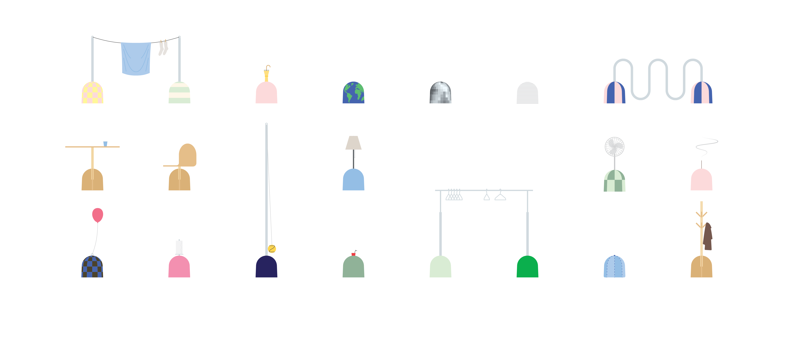

An ongoing project about Italian bollards and creaturely architecture. Essays Beginning On Descriptivism & Domestication Taxonomy of various Panettoni seen around Italy.  My speculative additions to the Panettone family.